Note
Click here to download the full example code
Case 13.2: Velocity change of a subsonic aircraft
Verifies |
Multidimensional table look-up |
Gravitation |
J2 |
Geodesy |
WGS-84 rotating |
Atmosphere |
US 1976 STD |
Winds |
still air |
Vehicle |
F-16 with simple auto-pilot |
Notes |
Initially straight & level. t=5s, decrease commanded 5 KEAS |
For the manuevering examples, the BlockDiagram from case 11 is modified to replace the controller with the auto-pilot configuration and generate the appropriate command signals.
from simupy import systems
from scipy import interpolate
from nesc_testcase_helper import plot_nesc_comparisons, plot_F16_controls, benchmark
from nesc_case11 import (
int_opts,
F16ControllerBlock,
BD,
opt_ctrl,
dim_feedback,
trimmed_KEAS,
)
keasCmdBlock = systems.SystemFromCallable(
interpolate.make_interp_spline([0, 5], [trimmed_KEAS, trimmed_KEAS - 5.0], k=0),
0,
1,
)
BD.systems[-4] = keasCmdBlock
BD.systems[2] = F16ControllerBlock(*opt_ctrl, sasOn=True, apOn=True, event_t=5.)
with benchmark() as b:
res = BD.simulate(20, integrator_options=int_opts)
Out:
time to simulate: 27.960 s
- 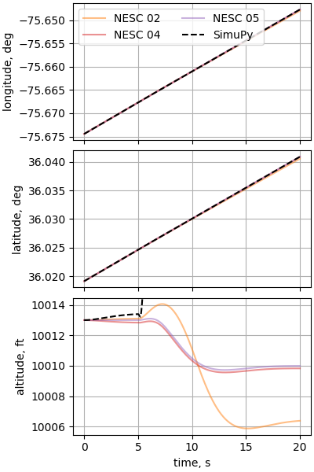
- 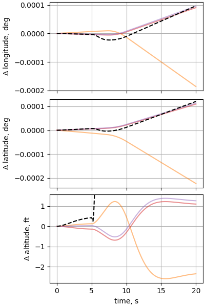
- 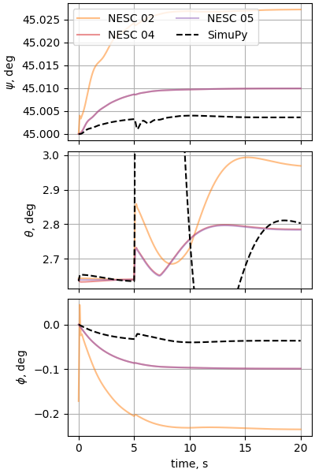
- 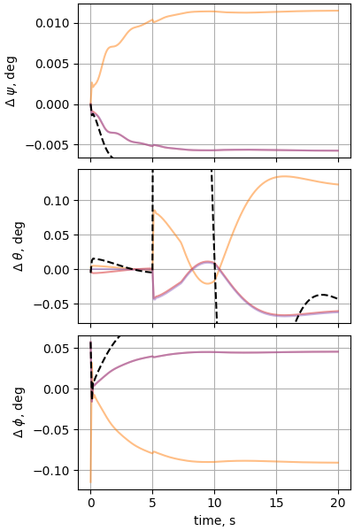
- 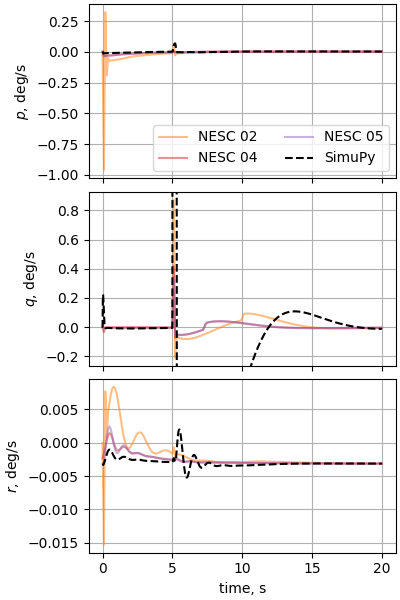
- 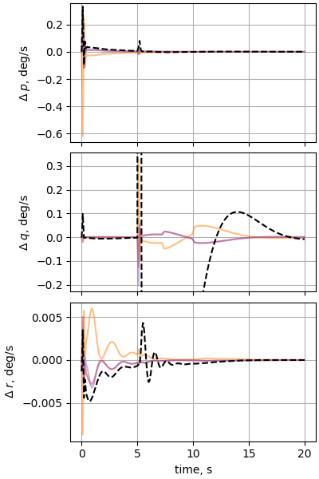
- 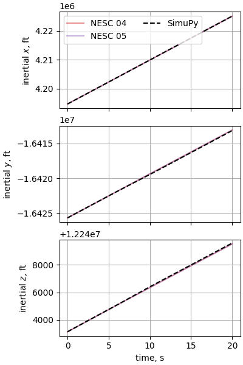
- 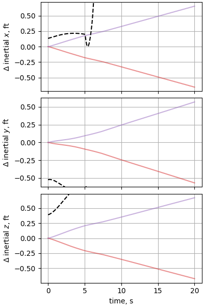
- 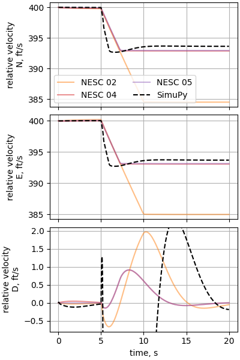
- 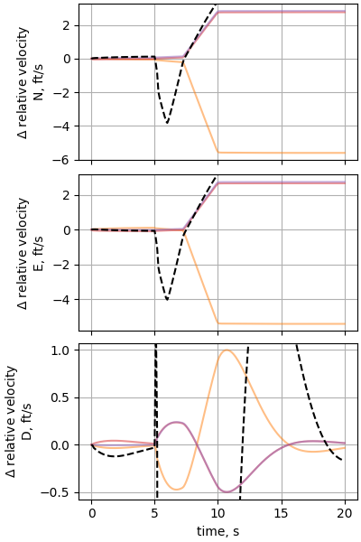
- 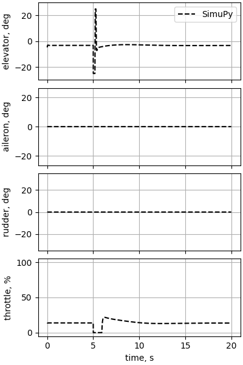
Out:
missing eiPosition_ft_X for SIM 02
missing eiPosition_ft_Y for SIM 02
missing eiPosition_ft_Z for SIM 02
Total running time of the script: ( 0 minutes 33.058 seconds)